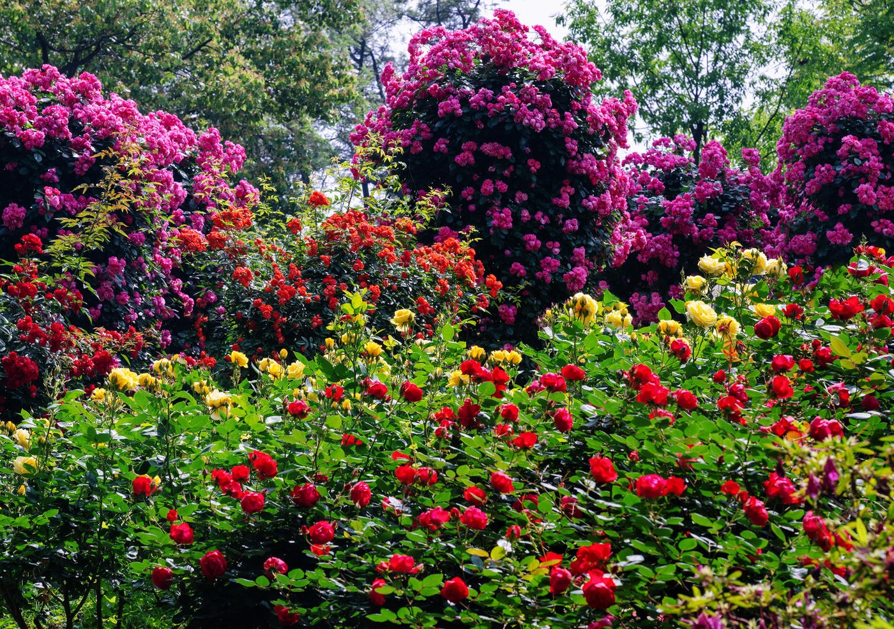
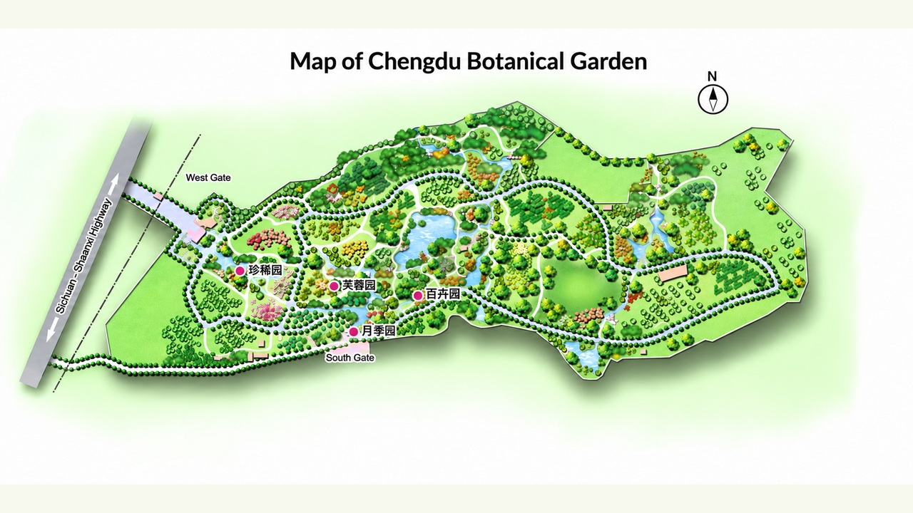

CHENGDU BOTANICAL GARDEN
慢一点，
走进花园里。
花开、水影与林间故事，都值得停留。
YOUR GARDEN WALK
我的游览清单
正在准备您的游览清单。
准备出发
FIND YOUR NEXT STOP
花园里的位置

红色序号对应您的清单。连线仅表示游览顺序，步行请沿园内道路与现场指引。
FOUR GARDENS, FOUR STORIES
每一园，都有故事
留一点时间，给自然
看花，也看叶片、树干与水中倒影。植物会随季节变化，照片展示的是不同时间的园中风景。
乘地铁 3 号线可至植物园站。开放时间、活动及现场路线请以园方最新公告为准。